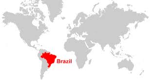
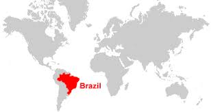
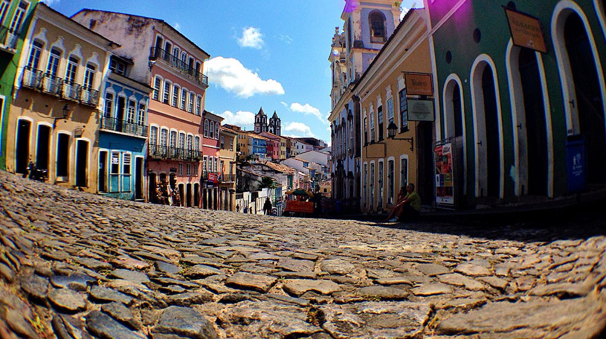
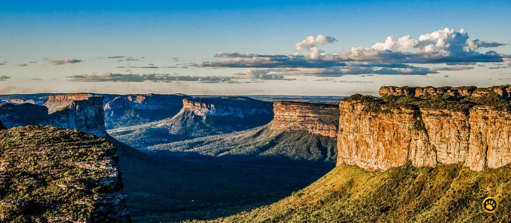

BRAZIL
 

- Area: 8.516.000 km2
- Population: 209,5 million
- Capital: Brasilia
- Currency: Real (R$) (BRL)
- Language: Portuguese
- Fun fact: Brazil contains most of the Amazon River basin, which has the world’s largest river system and the world’s most-extensive virgin rainforest.
Top 3 Places to Visit in Brazil
1. Christ the Redeemer

Christ the Redeemer is acolossal statue of Jesus Christ at the summit of Rio de Janeiro, southeastern Brazil. It was completed in 1931 and stands 98 feet (30 metres) tall, its horizontally outstretched arms spanning 92 feet (28 metres). The statue, made of reinforced concrete clad in a mosaic of thousands of triangular soapstone tiles, sits on a square stone pedestal base about 26 feet (8 metres) high, which itself is situated on a deck atop the mountain’s summit.
2. Pelourinho
Salvador’s old city is brimming with colonial architecture and promises a rich cultural experience down every turn. Take in the best of the historic Pelourinho district, a UNESCO World Heritage Site.
3. Chapada Diamantina
The water spring from the ridges, slide slowly through the vegetation and plummet in towering waterfalls, forming natural pools that are amazingly transparent. Chapada Diamantina is like this: wherever you look, you are faced with lush landscapes, blessed by mother nature.